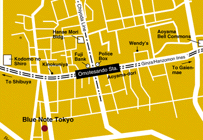

Blue Note, Tokyo
Джаз-клуб Blue Note
| Веб: | http://www.bluenote.co.jp/ |
| Адреса: | 6-3-16, RAIKA Bldg., Minamiaoyama, Minato-ku, Tokyo 107-0062 |
| Tel: | 3407-5781 |
| Розклад: | http://www.bluenote.co.jp/sche/index.html |
Мапа:

Створений : dmytro.
останні зміни: Субота 24 з April, 2004 14:21:50 JST dmytro.
Оригінал документу знаходиться на http://tiki/tiki/tiki-index.php?page=Blue%20Note%2C%20Tokyo